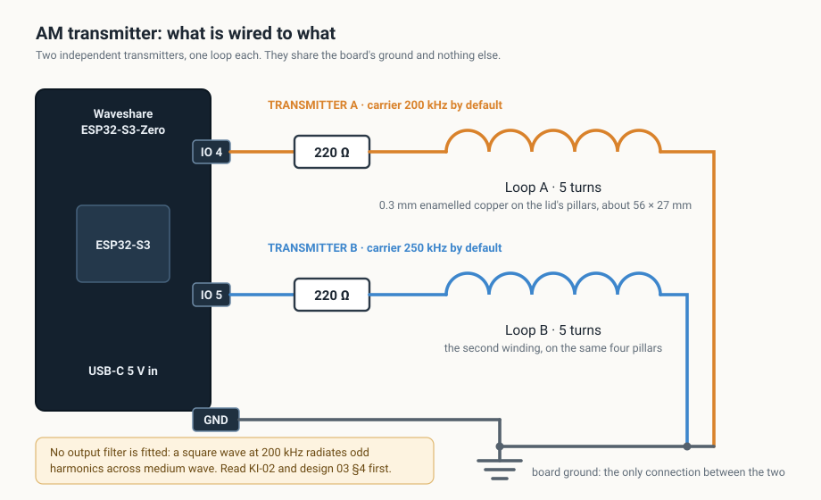
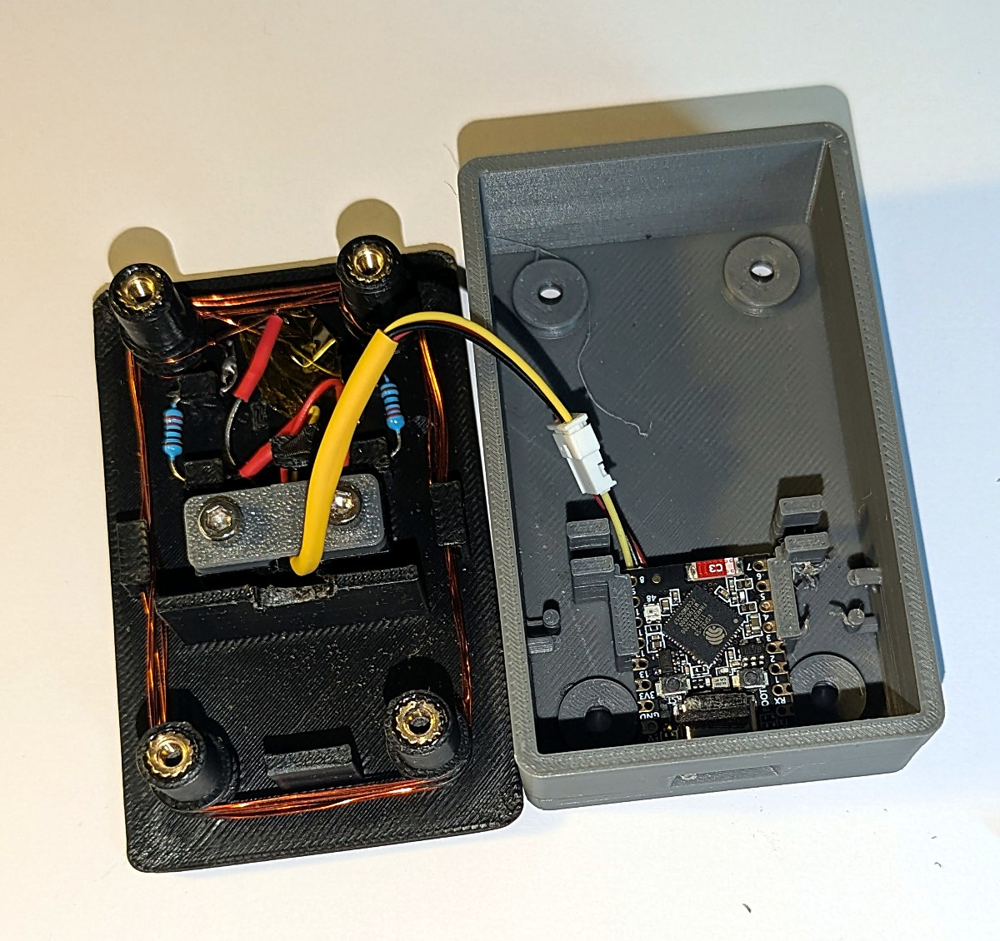
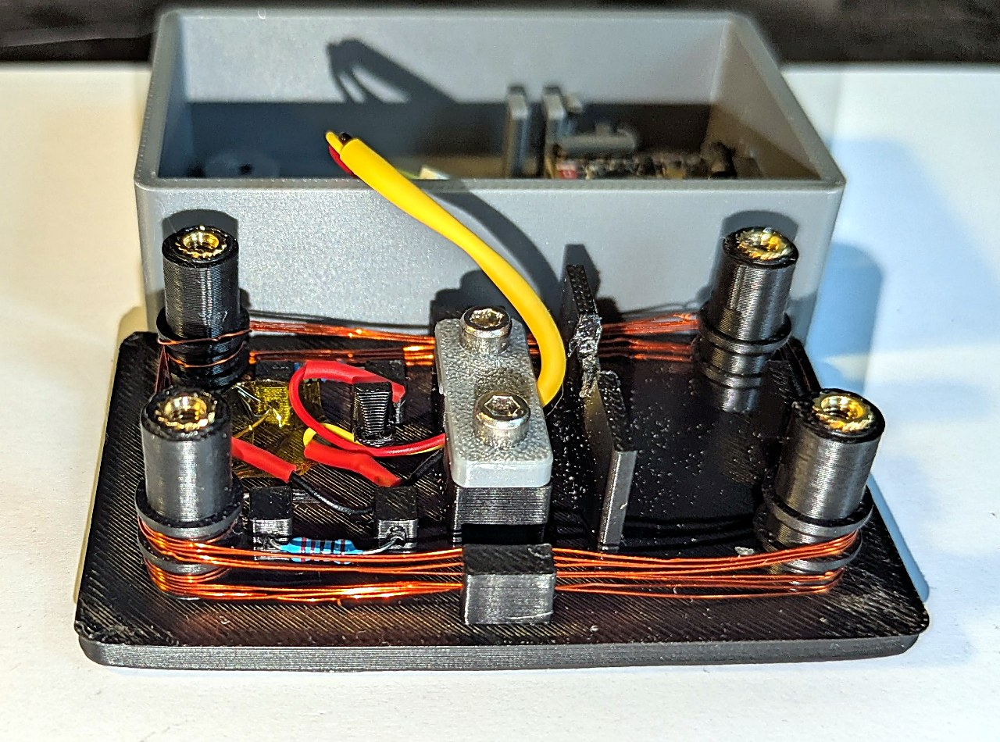
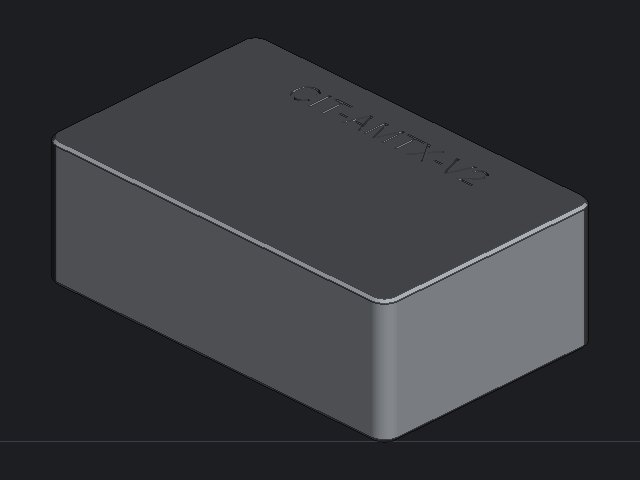
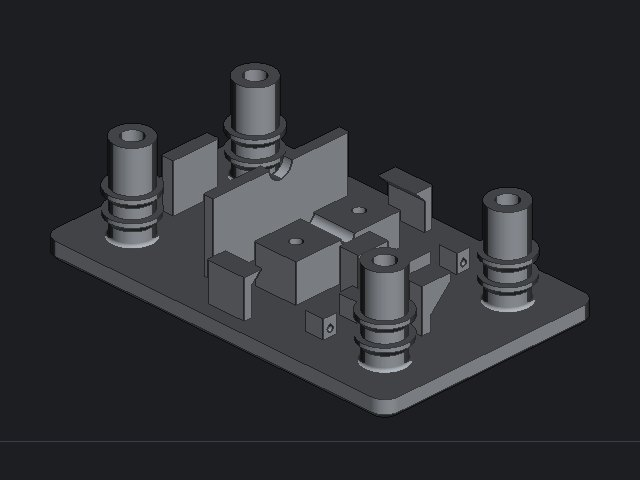
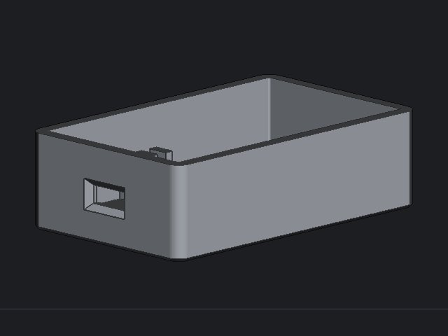
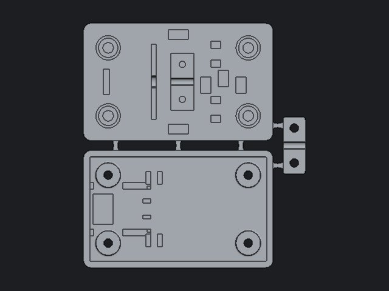

Open source · GPL-3.0 · v1.0
An ESP32-S3 streams internet radio over Wi-Fi and transmits it as an amplitude-modulated longwave carrier from a GPIO pin. A 1940s wireless in the same room tunes it in and plays it, through its own dial, its own speaker and its own valves.
Three minutes: the set on the shelf, tuned by hand across the dial, and the web page that decides what it plays.
One GPIO pin, one resistor, five turns of wire, back to ground. Twice, because there are two transmitters sharing nothing but the ground.

Duty-cycle AM linearised through an arcsine table, because the obvious scheme barely modulates at all. A 20 kHz interrupt writes the duty register; a 6th-order low-pass keeps the transmission inside its channel.
A fractional resampler with a fill controller absorbs the drift between the station's clock and this one. A loudness AGC brings stations that differ by 10 dB to within about 2 dB of each other.
Two decoders, two DSP chains, two carriers, one board. Tune one radio to 200 kHz and another to 250 kHz and they play different things.
A web page it serves itself, and a serial console that can do everything the page can, so a board whose Wi-Fi is wrong is still reachable over USB.
A Waveshare ESP32-S3-Zero, two 220 ohm resistors, 0.3 mm enamelled copper wire, four heat-set inserts and about 40 g of filament.


Four corner pillars are the winding former, the lid fixing and the clamp that holds it all together. Every overhang is a 45 degree flare, so nothing needs support.




STEP to edit and STL to print are in
case/.
pip install esptool
python -m esptool --chip esp32s3 -p COM5 write_flash 0x0 amtx-v1.0-merged.bin
Then join the AMTX-Setup Wi-Fi network the board raises, and
the setup page opens by itself. It comes up playing Radio Swiss Jazz on
one transmitter and the BBC World Service on the other.
| Manual | For |
|---|---|
| Build | Making one from parts: printing, inserts, winding, wiring, assembly |
| Installation | The toolchain, building the firmware from source, flashing |
| User | Driving it once it runs |
| Technical | How the firmware works, for changing it |
The default carrier is 200 kHz, inside the longwave broadcast band and 2 kHz from BBC Radio 4 on 198 kHz. Deliberate radiation there is licensed in the UK and in most other countries, and this project holds no licence. It is built to be heard across a room: an inductive loop beside the receiver, not an antenna. What you radiate, and the rules where you live, are yours to check.
A square-wave carrier radiates odd harmonics at 600 kHz, 1 MHz and upward, across the whole medium-wave band. At this power, with the loop beside the receiver, that was judged acceptable by ear — and it has never been measured on a spectrum analyser. Raise the drive, lengthen the antenna or drop the resistor and the harmonics rise with it. The Technical Manual gives a low-pass network to fit if you do.
This project tries to be honest about the difference between built and proven. As of v1.0:
| Runs | Two stations playing at once, heard on a receiver, both decoders at full rate with the modulator never starving. Web interface, console, Wi-Fi and diagnostics all used on a real board. |
| Printed | The case has been printed and built more than once. The revision published here fixes what the last print got wrong; it has not itself been printed. |
| Untested | The factory-reset gesture, holding the BOOT button for five seconds. Built, never pressed. |
| Unmeasured | Nothing has been on a spectrum analyser or a scope. Harmonic content, radiated field strength and modulation depth are all unknown. |
{kind=link}